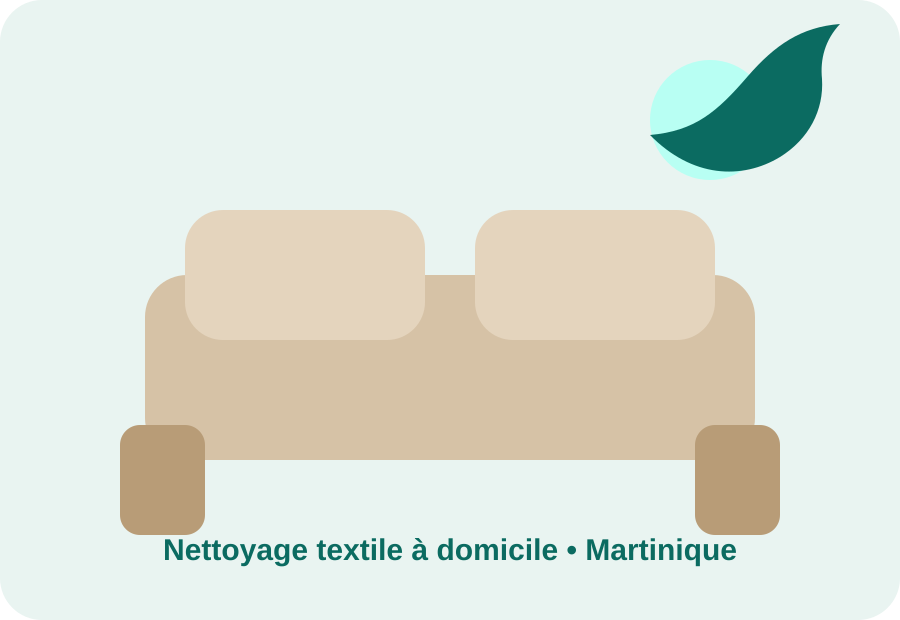
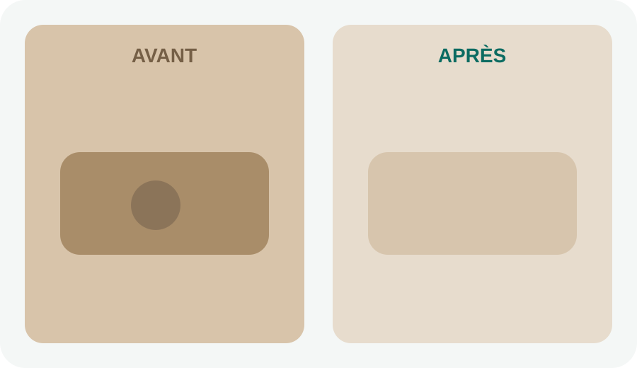

Canapés & fauteuils
Élimination des taches tenaces, auréoles et odeurs sur tous types de tissus. Traitement adapté à la fibre pour redonner fraîcheur et éclat à votre mobilier.
Choisir cette prestation →Expertise textile à domicile • Martinique entière
Canapés • Matelas • Tapis • Chaises en tissu
Retrouvez des textiles propres, frais et agréables sans les transporter : Madyclear intervient directement chez vous, partout en Martinique.

La propreté jusque dans la fibre
Dans un climat tropical, humidité, transpiration, poussière et allergènes s’installent rapidement. Notre nettoyage textile à domicile agit au cœur des fibres pour retrouver fraîcheur, confort et sérénité.
Intervention à domicile sur toute la Martinique.
Pourquoi agir maintenant ?
Boissons, nourriture, transpiration, poussière, humidité et odeurs s’installent progressivement dans les fibres. Un nettoyage professionnel aide à retirer les salissures incrustées, les auréoles et les odeurs accumulées. Chaque textile est d’abord diagnostiqué afin de choisir un traitement adapté.
Résultat avant / après
Le résultat varie selon la matière, l'ancienneté des taches et l'état du textile. Le diagnostic permet d'adapter le traitement avant intervention.

Nos services
Élimination des taches tenaces, auréoles et odeurs sur tous types de tissus. Traitement adapté à la fibre pour redonner fraîcheur et éclat à votre mobilier.
Choisir cette prestation →Nettoyage en profondeur des surfaces textiles pour retrouver un couchage propre, frais et agréable.
Choisir cette prestation →Nettoyage ciblé des fibres, assises et dossiers avec diagnostic préalable selon la matière et l’état.
Choisir cette prestation →Remise à neuf des textiles auto : sièges, banquettes, moquettes et coffre pour retrouver un habitacle propre et agréable.
Choisir cette prestation →Solutions adaptées aux conciergeries, locations saisonnières, agences et entreprises selon fréquence et volume.
Demander une étude →Nettoyage de fin de chantier et entretien de locaux professionnels ou de maisons, sur étude de votre besoin.
Décrire mon besoin →Tarifs
Le tarif dépend du textile, de ses dimensions, de son état et du traitement nécessaire. Les éventuels suppléments sont annoncés avant l’intervention.
Simple et transparent
Envoyez des photos, les dimensions et les taches ou odeurs à traiter. Nous vérifions le textile avant de confirmer la prestation.
Vous recevez le tarif, la méthode conseillée et le créneau. Les éventuels suppléments sont annoncés avant l’intervention.
Madyclear intervient chez vous, adapte le traitement à la fibre, contrôle le résultat et vous donne les consignes de séchage.
Questions fréquentes
Oui. Madyclear propose une intervention à domicile sur toute la Martinique, selon les disponibilités du planning.
Chaque fibre et chaque tache réagit différemment. Nous évaluons le textile avant traitement et vous expliquons le résultat attendu.
Le délai dépend de la matière, de l’aération et de l’humidité. Nos recommandations vous sont données après l’intervention.
Devis gratuit
Décrivez votre besoin. Le bouton prépare automatiquement votre demande dans WhatsApp ; vous pourrez y ajouter vos photos avant l’envoi.